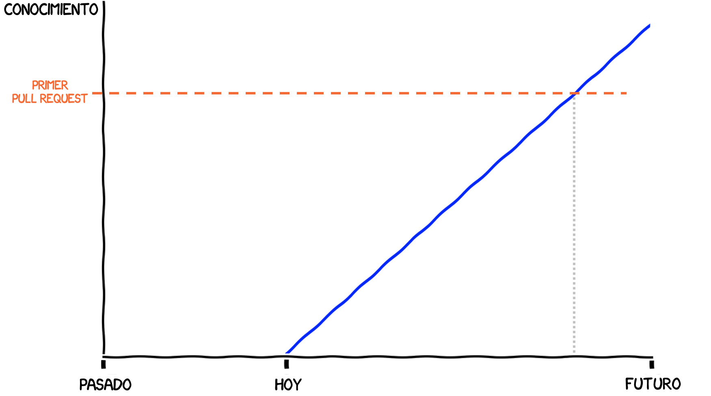
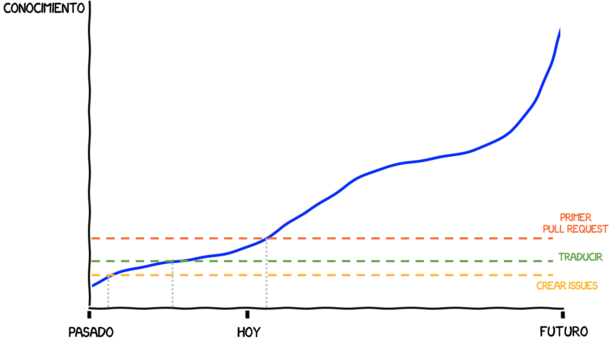

Experiencias del Sprint de Data Umbrella
Desde hace mucho tiempo tenía el deseo de contribuir “en algún momento” a un proyecto de código abierto. Sin embargo ese momento ideal siempre era pospuesto para más adelante, cuando tuviera más experiencia y más tiempo. Por eso, cuando leí sobre el Sprint de Data Umbrella en varios canales de Telegram de python y programación, no dudé y me inscribí. Era la oportunidad perfecta para obligarme a aprender. No hay nada como un poco de presión social para mover los engranajes de un procrastinador.
Para ser sincero, no ubicaba a Data Umbrella. Se trata de una organización que se preocupa de proporcionar apoyo a grupos poco representado, ya sea por género, raza, edad, orientación sexual u otros, en los campos de Machine Learning, Data Science e Inteligencia Artificial. El sprint que realizaron el 26 de Junio tenía como foco Latinoamérica, que tiene una participación baja en estos temas. El trabajo de Data Umbrella con los grupos de poca representación resulta muy valioso para derribar todos los mitos y barreras de entrada que pueden estar frenando la llegada de nuevos talentos.
Lo que más me gustó del Sprint de Data Umbrella fue la organización: tenían un checklist muy preciso de los temas a revisar, con videos explicando cada paso a paso. Por eso, era fácil estimar cuánto tiempo necesitabas preparando o aprendiendo antes del sprint. El uso de discord también ayudó mucho a darle una informalidad y aspecto comunitario, y sirvió para responder las preguntas y conocernos. Introducirse en nuevo grupo siempre es difícil, y para novatos el desafío es aún mayor. El hecho de tener un pre-sprint y post-sprint ayuda a consolidar el aspecto humano y comunitario, resolver los problemas técnicos que siempre aparecen, y ganar confianza.
Durante el sprint, el hecho de organizarnos para programar de a pares también fue de gran ayuda. Con Leonardo Rocco trabajamos en 2 issues: * DOC Ensures that ARDRegression passes numpydoc validation #20381 * DOC ensures FastICA estimator pass the numpydoc validation #20405
¡Puedo decir con orgullo que ambos pull requests ya fueron aceptados!
Al reflexionar sobre mi experiencia en el Sprint, me doy cuenta que tenía la expectativa que me faltaban muchas cosas por aprender.

En el sprint aprendí que no se requiere ser un super-programador para contribuir al código abierto. La realidad es que, de partida, no existe una única manera de contribuir. Hay un abanico interminable de posibles trabajos, desde los más sencillos a los más avanzados, y un largo camino de aprendizaje. Por eso, es importante darse cuenta que no se trata de que “no sabes” sino que “no sabes aún”, y que hay una comunidad dispuesta a apoyarte en ese proceso de aprendizaje. Todos estamos en un proceso de aprendizaje. Involucrarse en proyectos colaborativos es precisamente una manera de acelerar el aprendizaje, y de paso, contribuir a las librerías que más usas.

Hay un excelente informe del sprint en el blog de Reshama. La distribución de los participantes por países es bastante sorprendente. Imaginaba una distribución más uniforme, pero la mayoria de los participantes son de Argentina y Brasil. ¡Hay hacer algo al respecto!
Además de las contribuciones comunitarias e individuales, otro elemento importante del código abierto son las subvenciones y la financiación por parte de empresas. ¡Pídele a tu jefe presupuesto para financiar las herramientas que usas a diario! En particular, este sprint fue financiado en parte por una subvención de Code for Science & Society. Esto es comunidad y transparencia en estado puro: puedes obtener todos los detalles de la subvención en línea: Grant number GBMF8449 en Gordon and Betty Moore Foundation.